2026 대한민국 청년 CAREER FAIR AI 해커톤 · 프로젝트 소개서
일하면서 정부 지원을 받는 청년에게
실제로 남는 돈을 미리 계산해 주는 AI 서비스
공고를 올리면 AI가 조건을 읽고, 월급·정부 지원·부모님 보험과 세금이
어떻게 달라지는지 일하기 전에 공식 기준으로 보여 줘요
주말에 카페에서 일해
한 달에 131만 원을 벌면,
실제로 남는 돈은 81만 원이에요
앱 첫 화면의 가상 예시 · 한끗 계산 엔진으로 계산
한 줄 요약
일하면서 정부 지원을 받는 청년이 일자리 공고를 올리면 AI가 근무 조건을 읽고, 공식 기준으로 실제로 남는 돈과 정부 지원·부모님 보험·세금의 변화를 계산해 근무시간 선택과 시작 전 준비까지 돕는 서비스
정부 지원을 받으면서 일을 시작하려는 청년은 월급만 보고 정해요. 줄어드는 정부 지원, 보험료, 부모님 공제·피부양자 자격은 제도마다 기준(주 15시간, 월 60시간, 주 30시간, 연 100만 원 등)과 세는 기간이 달라 더 일하고도 덜 남거나 신고를 놓치기 쉬워요.
더 일했는데 덜 남는 예 (가상, 1~6월 한 달)
주 18시간 842,783원
받은 제안 주 24시간 810,863원
AI(Claude Opus 5.5)가 공고 사진·글에서 조건 5개를 원문 근거와 함께 읽고, 확실하지 않은 것만 되물어요. 계산은 법령 원문으로 만든 규칙표를 코드가 해서 남는 돈, 근무시간별 변화 지점, 사장님께 보낼 문구, 신고 준비까지 보여 줘요.
AI와 코드의 역할 나눔
제출 주소 hankkeut-app.vercel.app에서 로그인 없이 전체 흐름이 동작해요(AI 공고 읽기 포함). 공고 입력부터 결과, 근무시간 비교, 문구, 시작 전 준비까지 휴대폰과 PC 화면을 모두 만들었어요.
검증
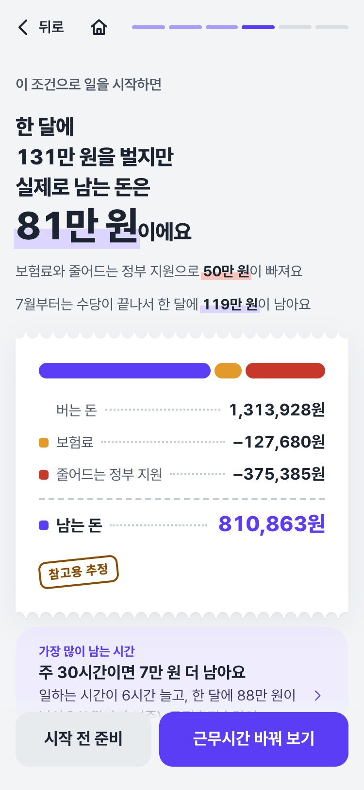
일 하나를 시작하면 바뀌는 기준: 제도마다 기준선도, 세는 기간도 달라요
| 주주 15시간 | 주휴수당이 생기고 4대보험 가입 대상 법 기준은 한 달 소정근로 60시간이라 주 14시간도 해당될 수 있음 |
| 월한 달 60시간 | 직장 건강보험 가입 → 부모님 건강보험 피부양자에서 빠짐 |
| 월월 소득 938,543원 | 넘으면 구직촉진수당이 줄기 시작, 1,538,543원부터 0원 |
| 주주 30시간 | 취업으로 보아 구직촉진수당 지급 끝 |
| 연연 소득금액 100만 원 | 넘으면 부모님 연말정산 부양가족 공제에서 빠짐 근로소득만 있으면 총급여 500만 원, 자녀는 20세 이하만 대상 |
근거: 근로기준법 제18조, 국민건강보험법 시행령 제9조, 구직자취업촉진법 시행령 제9조의2·시행규칙 제20조, 소득세법 제50조 (2026. 11. 20. 원문 확인)
그래서 생기는 일: 더 일했는데 덜 남는 구간 가상 예시
시급 10,500원 · 구직촉진수당 받는 중(6월까지) · 1~6월 한 달 기준, 한끗 계산 엔진으로 계산. 주 19~29시간은 줄어드는 수당이 늘어나는 급여보다 커서 주 18시간보다 적게 남아요(앱은 ‘이득 없는 구간’으로 표시)
438만 2천 명
시간제 근로자 (2026년 8월)
국가데이터처 근로형태별 부가조사 (정책브리핑, 2026. 10. 21.)
163만여 명
국민취업지원제도 누적 이용
2021년 도입~2025년 12월, 고용노동부 보도자료 (2026. 4. 28.)
월 60만 원
구직촉진수당 × 최대 6개월
2026년 기준, 고용노동부
모르고 놓치면
수당을 받는 동안 번 돈을 신고하지 않고 받으면 돌려줘야 하고, 같은 금액을 더 낼 수도 있어요. 지급 정지가 3번이면 수급자격이 철회돼요
구직자취업촉진법 제21조·제28조
주요 사용자 (Primary) 일을 시작하거나 늘리려는 청년 중
“이 일을 하면 수당이 얼마나 줄까?”
예) 27세, 수당 6월까지, 주말 카페 주 24시간 제안 → 한 달 131만 원을 벌어도 남는 돈은 81만 원
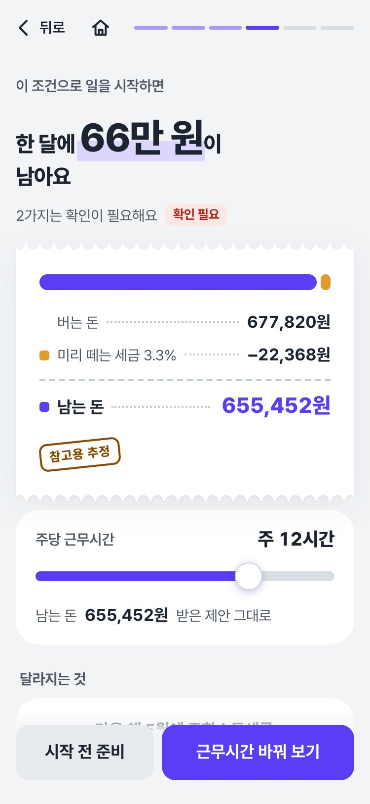
“부모님 보험·세금에 영향이 있을까?”
예) 20세, 3.3% 떼는 학원 보조 주 12시간 → 한 달 66만 원, 부모님 공제·피부양자는 확인할 곳과 함께 ‘확인 필요’로 안내
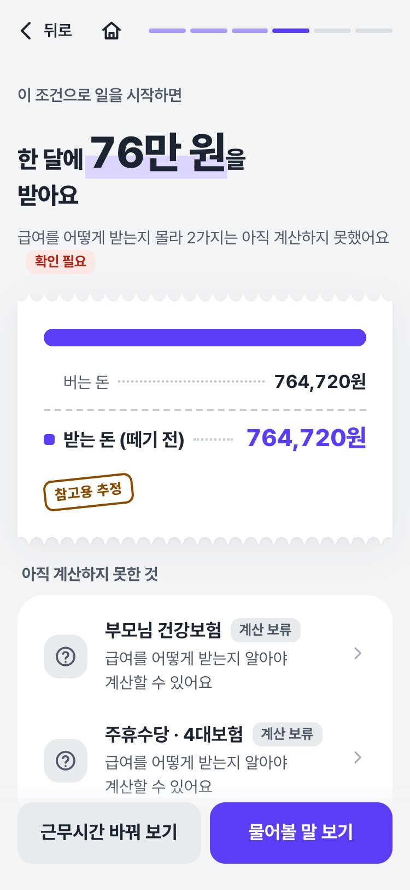
“무엇을 물어봐야 할까?”
예) 23세, 급여 지급 방식과 기간이 없는 편의점 공고 → 빠진 조건을 되묻고, 사장님께 물어볼 말을 정리
예시는 모두 앱에 들어 있는 가상 예시이며, 그림은 실제 결과 화면이에요
보조 사용자 또는 이해관계자
사용자가 얻는 가치
일하기 전에 남는 돈을 달마다 앎
번 돈 − 보험료·세금 − 줄어드는 정부 지원
근무시간을 바꾸면 무엇이 달라지는지 보고 직접 고름 (가장 많이 남는 시간, 그 시간에 수당이 끊기면 수당을 지키는 시간도 보여 줌)
사장님께 보낼 문구와 신고할 곳·시점 체크리스트
로그인 없이 바로, 입력은 한끗 서버에 저장하지 않음
모르는 건 모른다고: 확인이 필요한 항목은 금액에 넣지 않고 문의처와 함께 따로 표시
해결 방안 개요
사용자
공고 올리기
사진·글·직접 입력
AI
조건 읽기
조건 5개 + 원문 근거 + 확인 수준
AI 판정 → 화면
되묻기
추정·빈칸만 하나씩
코드
규칙 엔진 계산
4개 제도, 법령 원문 규칙표
코드
비교·문구·준비
근무시간별 남는 돈, 체크리스트
왜 AI여야 하는가
공고 표기가 제각각: 시급·월급·일당·3.3%, 요일·시간대·휴게시간, 캡처 사진까지. 정해진 규칙으로는 다 읽지 못해요
읽으면서 계산해야 해요: “금·토·일 10:00~19:00(휴게 1시간)” → 하루 8시간 × 3일 = 주 24시간
소득 종류는 단서로 판별: “3.3% 떼고” → 사업소득, “4대보험 가입” → 근로소득. 어떤 제도가 적용될지가 여기서 갈려요
AI 적용 지점 munteok/api/extract.js · 금액·기준선 판정은 AI에 맡기지 않아요
1조건 읽기
사진(최대 3장, 긴 변 1,600px로 줄여 보냄)·글(4,000자까지)에서 시급, 주당 근무시간, 시작 월, 기간, 소득 종류
2근거와 확인 수준
항목마다 원문 구절과 확정·추정·확인 필요를 붙임 → 화면이 원문에 형광펜을 칠하고, 추정·빈칸만 되물음
3공고 판별
일자리 공고나 제안이 아니면 거절해, 엉뚱한 글로 계산하지 않음
4형식 고정
구조화 출력(JSON 스키마)으로 늘 같은 모양을 받아 계산 엔진이 바로 씀
모델 Claude Opus 5.5 (claude-opus-5-5)effort lowAnthropic SDK + zod 구조화 출력Vercel 서버 함수에서 호출
AI가 틀리거나 모를 때
시험 가상 공고 8건(항목 35개) 기대값 일치, 공고 아닌 글 거절. 재시험에서 ‘12월부터 3개월’을 1개월로 줄여 읽는 오류를 찾아 지시문을 고침
서비스 구조도 (아키텍처)
사용자 브라우저 (휴대폰·PC)
화면app.js
질문 → 결과 → 근무시간 비교 → 문구 → 시작 전 준비
계산 엔진engine.js
급여·4개 제도 판정·근무시간 탐색. 화면과 분리한 순수 함수, 기대값 시험 172건
규칙표rules.json
기준 금액마다 근거 조문·적용 연도·확인일·확인 수준
세션 저장소
입력은 이 탭에만, 탭을 닫으면 지워짐
Vercel 서버 함수
api/extract.js
· 글 4,000자·사진 3장까지
· 같은 곳 1분 10회·1시간 60회까지
· 범위 밖 값 정리
· 입력 저장·기록 안 함
· API 키는 서버 환경변수에만
Anthropic Claude API
Claude Opus 5.5
조건 5개 + 원문 근거 + 확정·추정·확인 필요
공고가 아니면 거절
기술 스택
| 프론트/클라이언트 | HTML·CSS·JavaScript(ES 모듈, 프레임워크 없음). 휴대폰 우선 + PC 두 칸 화면, Pretendard 글꼴 |
| 백엔드/에이전트 | Vercel 서버 함수(Node.js) + @anthropic-ai/sdk·zod. 계산 엔진·근무시간 탐색·문구 조합은 브라우저에서 실행 |
| AI 모델 | Claude Opus 5.5 (claude-opus-5-5), effort low, 구조화 출력 |
| 외부 API | Anthropic Claude API (공공데이터 API는 쓰지 않음) |
| 데이터 (출처·라이선스) | 규칙표: 법령·고시 원문(국가법령정보센터 등)을 팀이 정리, 2026. 11. 20. 확인. 법령·고시는 저작권법 제7조의 보호받지 못하는 저작물. 예시·시험 공고는 팀이 만든 가상 데이터 |
| 배포 환경 | Vercel (화면 + AI 서버 함수) hankkeut-app.vercel.app |
금액 계산은 서버나 AI를 거치지 않아요. 사용자 브라우저에서 규칙표로만 계산해서, 같은 입력이면 늘 같은 결과가 나와요
핵심 기능 1
AI 공고 읽기와 확인
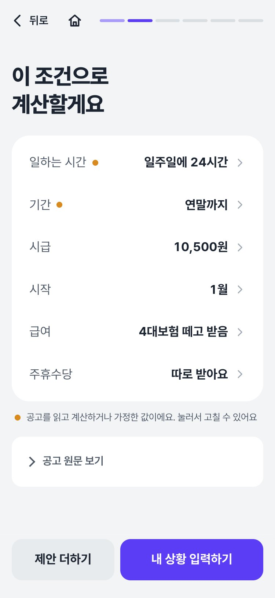
실제 화면 · 읽은 조건핵심 기능 2
남는 돈 계산
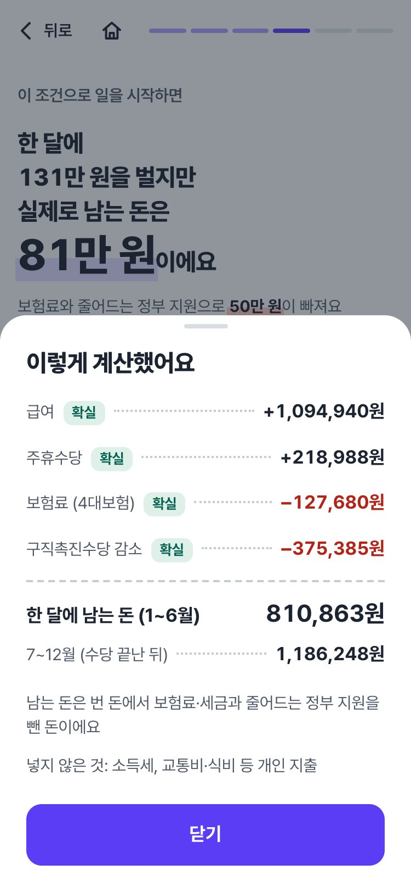
실제 화면 · 금액 자세히핵심 기능 3
근무시간 비교와 시작 전 준비
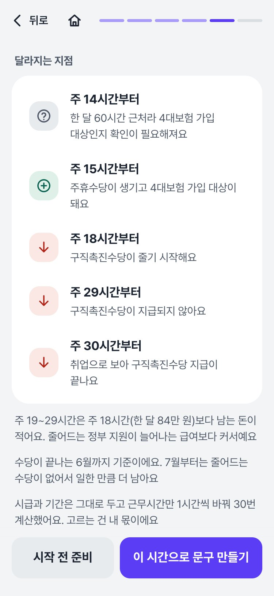
실제 화면 · 달라지는 지점주말 카페 근무 예시(가상)로 처음부터 끝까지 눌러 찍은 실제 화면이에요
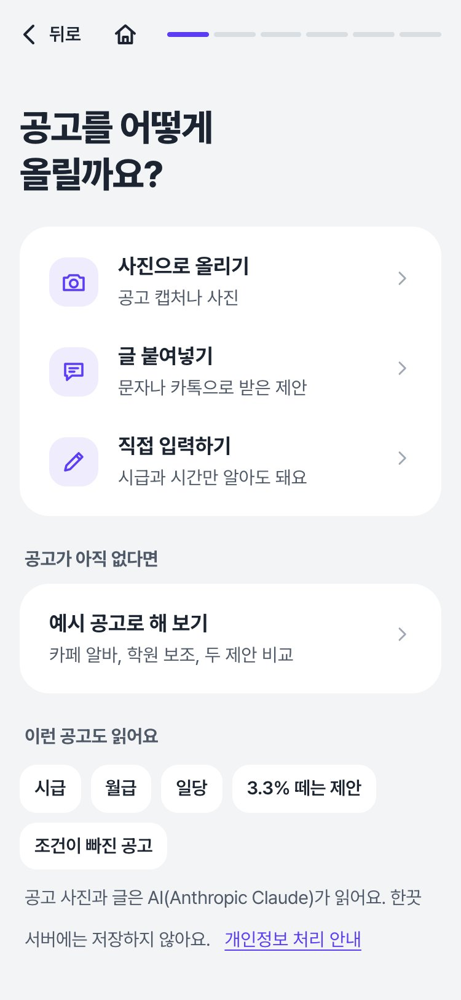
1공고 올리기
사진·글·직접 입력 중 하나, 공고가 없으면 예시로
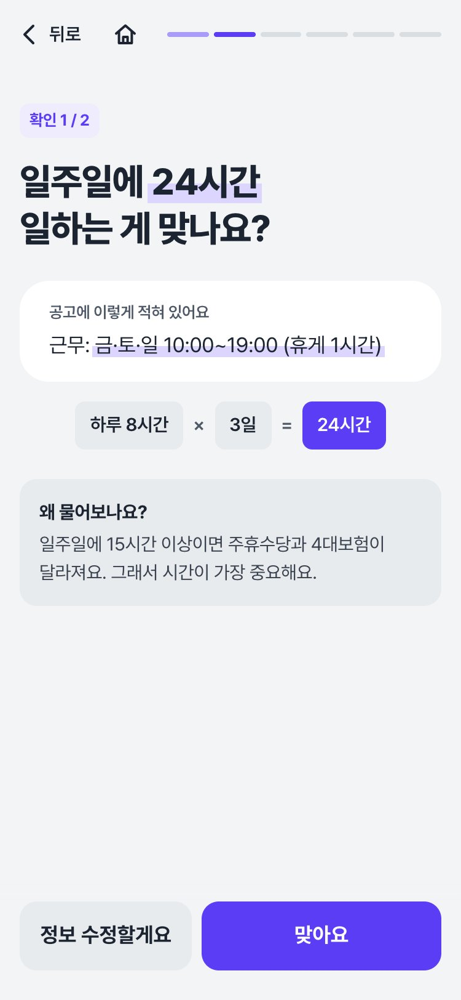
2조건 확인
AI가 읽은 값을 원문과 함께, 추정한 것만 되묻기
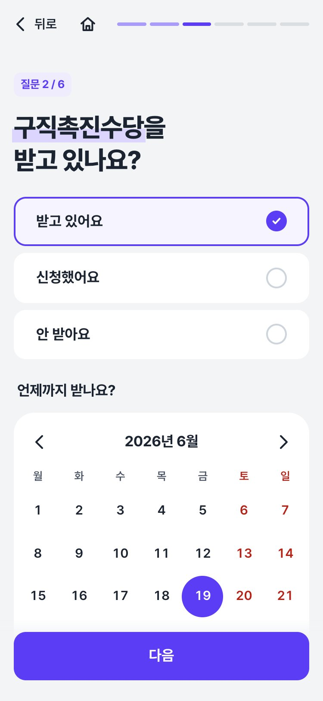
3내 상황
질문 6개를 하나씩, 수당이 끝나는 날은 달력으로 골라요
4결과
남는 돈과 달라지는 것, 가장 많이 남는 시간
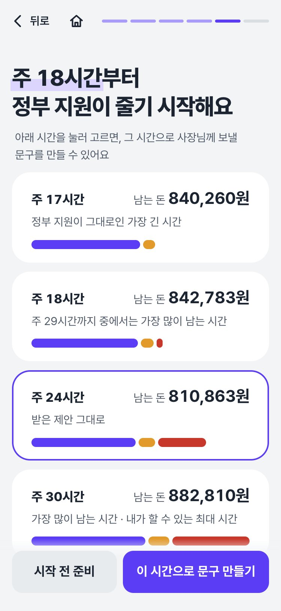
5근무시간 비교
변화 지점을 보고 시간을 골라 사장님께 보낼 문구 만들기
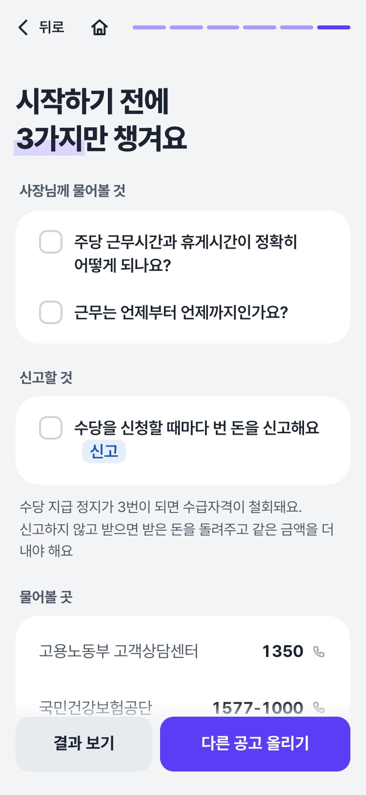
6시작 전 준비
물어볼 것, 신고할 것, 문의처
막혔을 때도
흐름이 이어져요
공고가 아니거나 사진을 못 읽으면이유를 알려 주고 글 고치기·직접 입력으로
AI 서버가 응답하지 않으면재시도 안내, 직접 입력·예시로 계속
부모님 보험·세금을 모르면‘모르겠어요’를 고르고 정부24·건강보험공단 바로가기
계산하지 않는 지원이면청년월세·실업급여 등은 계산하지 않고 문의처를 안내
기존 서비스와 차별화 요소
| 지금 청년이 확인하는 방법 | 한끗 | |
|---|---|---|
| 시작 | 제도별 계산기·안내 페이지를 찾아 조건을 직접 입력 | 받은 공고 사진·글을 올리면 AI가 읽고 근거를 보여 줌 |
| 범위 | 제도 하나씩: 급여 계산기(시급·주휴수당), 고용24 모의계산(수당), 건강보험공단 피부양자 안내, 홈택스 연말정산(부모가 사용) | 구직촉진수당·주 15시간 기준·건강보험 피부양자·부모님 공제를 한 번에 |
| 결과 | 제도별 자격이나 금액 | 지원 감소까지 뺀 남는 돈, 달마다(수당이 끝나는 달 반영) |
| 다음 행동 | 청년이 직접 정리 | 근무시간별 변화 지점, 사장님께 보낼 문구, 신고 체크리스트 |
| 근거 | 기관마다 따로 확인 | 규칙마다 근거 조문·확인일·확인 수준. 확인 안 된 규칙은 금액에 쓰지 않음 |
기존 서비스는 각 기관·서비스의 공개 안내를 기준으로 정리했어요 (2026. 11. 조사)
사용자에게 주는 효과
입력 부담이 줄어요
공고만 올리면 AI가 읽어요. 사용자는 형광펜으로 표시된 근거를 보고 확인만 해요
더 일해도 덜 남는 ‘이득 없는 구간’이 보여요
6시간을 더 일하는 제안인데 한 달에 약 3만 원이 덜 남아요(가상 예시, 1~6월)
고른 결정이 행동으로 이어져요
가장 많이 남는 시간을, 그 시간에 수당이 끊기면 수당을 지키는 시간도 함께 보여 주고, 고른 시간으로 문구와 신고 준비까지. 신고를 피하는 표현은 시험으로 막아요
믿고 쓸 수 있는 숫자
확실·어림값·확인 필요를 나눠 보여 주고, 큰 금액에는 원문으로 확인한 규칙만 써요
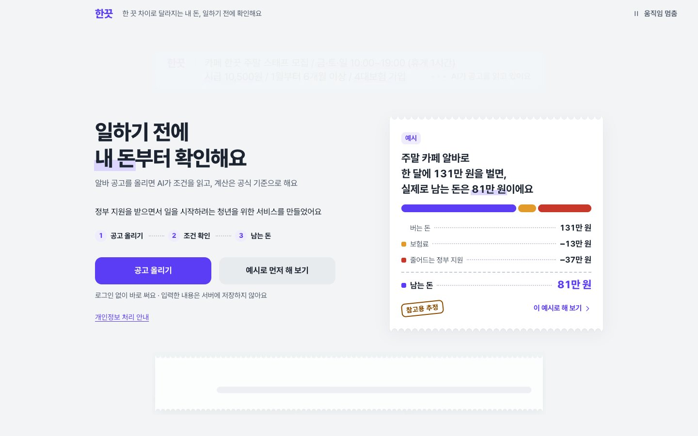
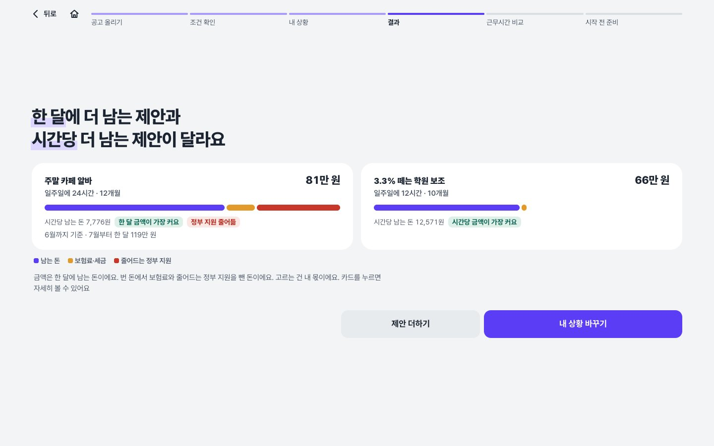
https://hankkeut-app.vercel.app
로그인·설치 없이 휴대폰과 PC에서 바로 써요. AI 공고 읽기 동작 확인(2026. 11. 23.), 예시 공고로는 AI 없이도 끝까지 체험할 수 있어요
구현된 기능
172건
계산 엔진 기대값 시험 모두 통과 (손으로 계산한 기대값)
8건 35항목
배포한 AI 추출을 가상 공고로 시험, 모두 기대값과 일치
40장
처음부터 끝까지 휴대폰·PC로 찍은 화면
남은 한계
+31,920원한 달, 6시간 덜 일하고
주 24시간 제안 대신 주 18시간을 고른 경우 (가상 예시, 1~6월)
3곳문의처를 한 번에
고용노동부 1350 · 건강보험공단 1577-1000 · 국세청 126
약 50~70원공고 1건 AI 비용
어림값: 입력 약 2,500·출력 약 1,500토큰, Claude Opus 5.5 가격(100만 토큰당 $4·$20), 1달러 1,400원
사용자·기능 확대 시 발전방안
지금 된 것은 적용, 앞으로 할 것은 계획으로 나눴어요
품질
기능
비용
별첨. 팀 구성 및 사전 개발 내역 고지
팀 구성 및 역할
| 이름 | 역할 | 담당 업무 |
|---|---|---|
| 김지호 | 대표자 | 구조설계 및 백엔드 지원 |
| 안상우 | 백엔드 | 메인 백엔드 개발 |
| 김채연 | 프론트엔드 | 프론트엔드 및 백엔드 지원 |
| 김민선 | 데이터 | 데이터 수집 |
기존 개발물 · 사전 개발 내역 해당 없으면 “해당 없음”
| 구분 | 내용 |
|---|---|
| 해커톤 이전 개발 범위 | 해당 없음 (저장소 첫 기록 2026. 11. 19.) |
| 해커톤 기간 중 개발 범위 | 2026. 11. 19. ~ 11. 23. 전부: 문제 정의와 기획 문서, 법령 원문을 정리한 규칙표, 계산 엔진과 기대값 시험 172건, AI 공고 읽기 서버 함수(Claude API), 휴대폰·PC 화면, Vercel 배포 |
| 타 공모전 출품·수상 여부 | 해당 없음 |
활용한 외부 자원 · 출처
| 구분 | 명칭 | 출처 · 라이선스 | 사용 위치 |
|---|---|---|---|
| 오픈소스 · 템플릿 | Pretendard 글꼴 v1.3.9 | github.com/orioncactus/pretendard · SIL Open Font License 1.1 | 앱 화면·소개서 글꼴 (jsDelivr CDN으로 불러옴) |
| @anthropic-ai/sdk 1.10.0 | npmjs.com/package/@anthropic-ai/sdk · Apache-2.0 (설치 패키지 기준) | AI 서버 함수 api/extract.js의 Claude 호출 | |
| zod 4.6.7 | npmjs.com/package/zod · MIT | AI 출력 형식(JSON 스키마) 고정 | |
| 템플릿 · UI 키트 | 사용하지 않음 (토스 공개 디자인 원칙 글만 참고, 로고·서체·색·UI 키트 미사용) | 화면 설계 원칙 (화면은 직접 제작) | |
| 외부 데이터 · API | Anthropic Claude API | platform.claude.com · Anthropic 상용 이용약관 | 공고 사진·글 읽기 (Vercel 서버 함수에서 호출) |
| Microsoft Clarity | clarity.microsoft.com · Microsoft 서비스 약관·개인정보처리방침 (쿠키 사용, 기록은 Microsoft 서버) | 체험 주소(munteok-open)에서만, 동의한 사람의 화면 사용 기록(누른 곳·스크롤). 입력값·계산 금액은 가림. 제출 주소에서는 꺼 둠 | |
| 법령 · 고시 원문 | 국가법령정보센터 law.go.kr · 저작권법 제7조의 보호받지 못하는 저작물 · 2026. 11. 20. 확인 | 규칙표 rules.json 기준값: 소득세법, 국민건강보험법령, 구직자취업촉진법령, 국민연금법, 노인장기요양보험법·고용보험법·보험료징수법 시행령, 근로기준법, 최저임금·기준 중위소득 고시 (조문 번호는 규칙표에 기록) | |
| 정부 안내 자료 | moel.go.kr(구직촉진수당 금액, 주휴 질의회시) · nhis.or.kr(피부양자 인정기준) · korea.kr(부양가족 공제, 세제개편안) · 각 누리집 이용조건 | 규칙표 출처 링크, 화면 ‘계산 근거와 출처’ | |
| 통계 | 국가데이터처 근로형태별 부가조사 브리핑(korea.kr, 2026. 10. 21., 공공누리 제1유형) · 고용노동부 보도자료(2026. 4. 28.) · 기획 참고: 한국조세재정연구원 보고서(2025. 12.), 정책브리핑 예산안(2026. 9. 4.) | 소개서 01장 통계, 기획 근거 | |
| 가상 공고 | 팀이 직접 작성(예시 3건, 시험용 5건) · 실제 개인정보 없음 | 앱 예시, AI 추출 시험 | |
| AI 모델 · 개발 도구 | Claude Opus 5.5 | Anthropic · API 이용약관 · 모델 ID claude-opus-5-5 | 서비스: 공고 조건 추출 (effort low, 구조화 출력) |
| Claude Fable 5.2 | Anthropic · 이용약관 · 모델 ID claude-fable-5-2 (Claude Code에서) | 기획: 주제 검토, 기획서·기획 문서 초안 검토, 디자인 시안 조사 (11. 19.~22.) | |
| Claude Code | Anthropic · 이용약관 | 개발: 법령 원문 조사, 계산 엔진·화면·시험 코드, 화면 시안, 문서·소개서 초안 | |
| 매니패스트 | AI 기획 문서 도구 · 서비스 이용약관 | 기획: 요구사항·기능명세·유저플로우·와이어프레임 초안 | |
| Vercel · GitHub Pages | vercel.com · pages.github.com · 각 서비스 약관 | 배포: 화면과 AI 서버 함수(Vercel), 정적 사본(GitHub Pages) | |
| 헤드리스 Chrome · ffmpeg | google.com/chrome · ffmpeg.org (LGPL/GPL) | 화면 캡처, 첫 화면 배경 영상(코드로 그린 장면) 녹화·인코딩, 소개서 PDF 변환 |
AI와 팀의 역할·검증 과정은 과제 제출서 「AI 활용내역」에 적었어요